各种状态
没标尺寸的都是窗口 1440×1000。

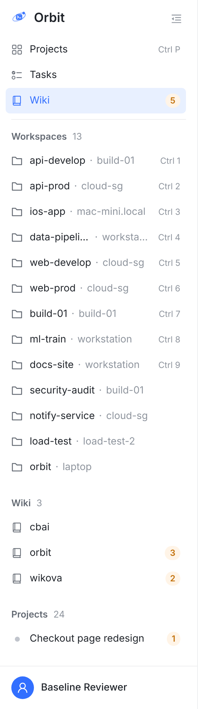
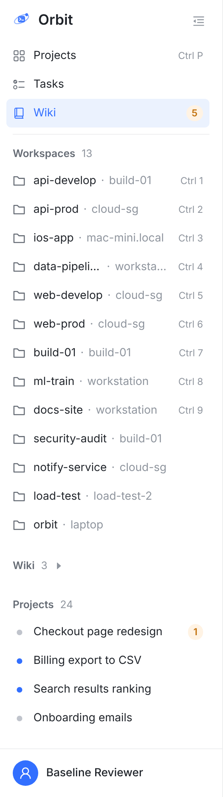
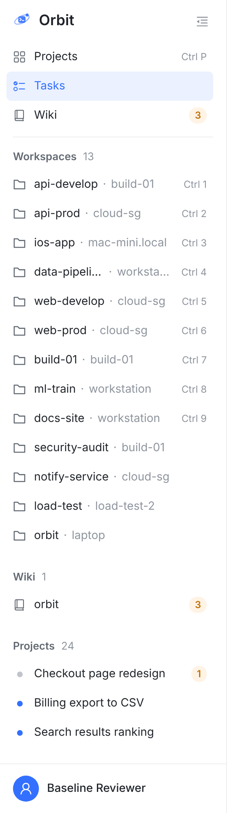
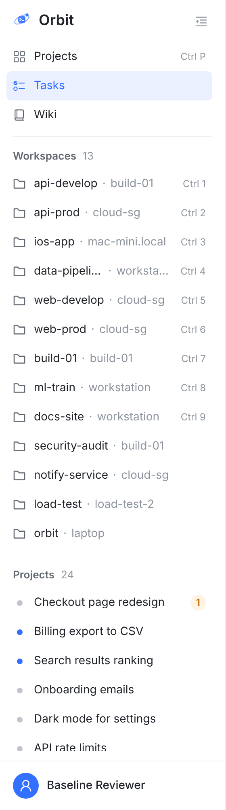
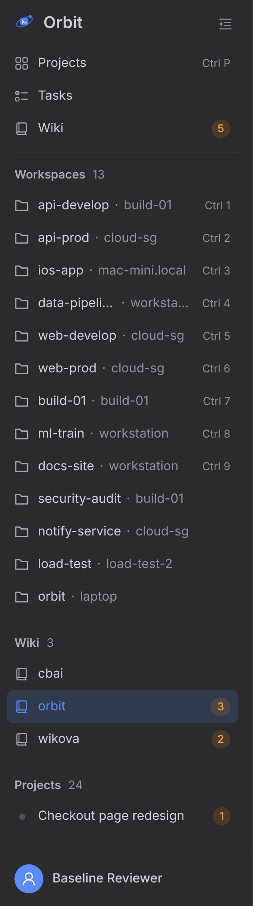
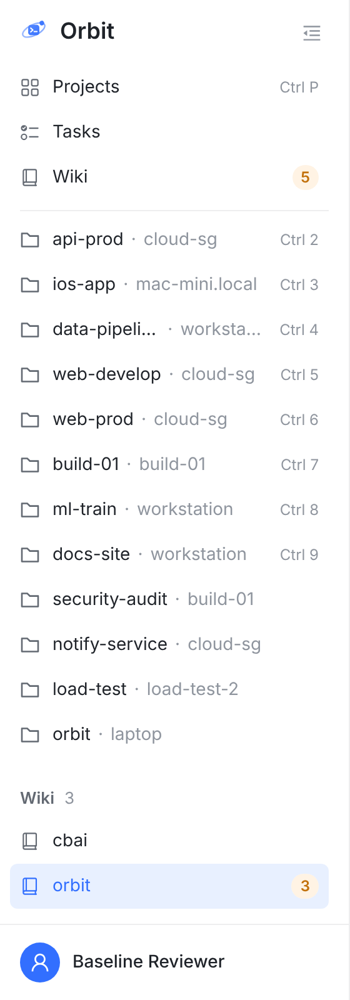
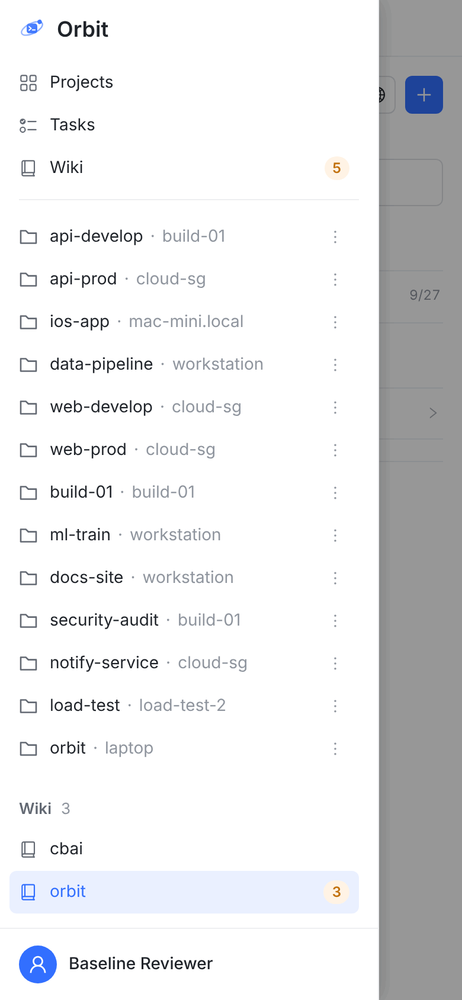
每张图都是真实 Web 控制台的截图，不是手画。今天 = main c58d41b73；建议 = 同一棵树加这次的原型。数据沿用 11-01 的侧栏板：13 个 Workspace、24 个项目，外加 3 个 wiki，名字是示例。红色虚线和数字是标注。这次只画 web，iOS、iPad、macOS、Android 的抽屉不动。
11-02 已定 三件事都按绿框：分组放在 Workspaces 和 Projects 之间，顶部 Wiki 行留着，窗口不够高时 Wiki 算固定部分。已按此实现。
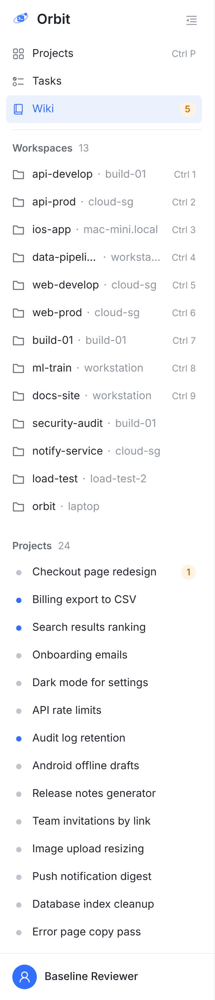
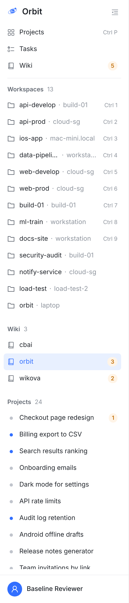
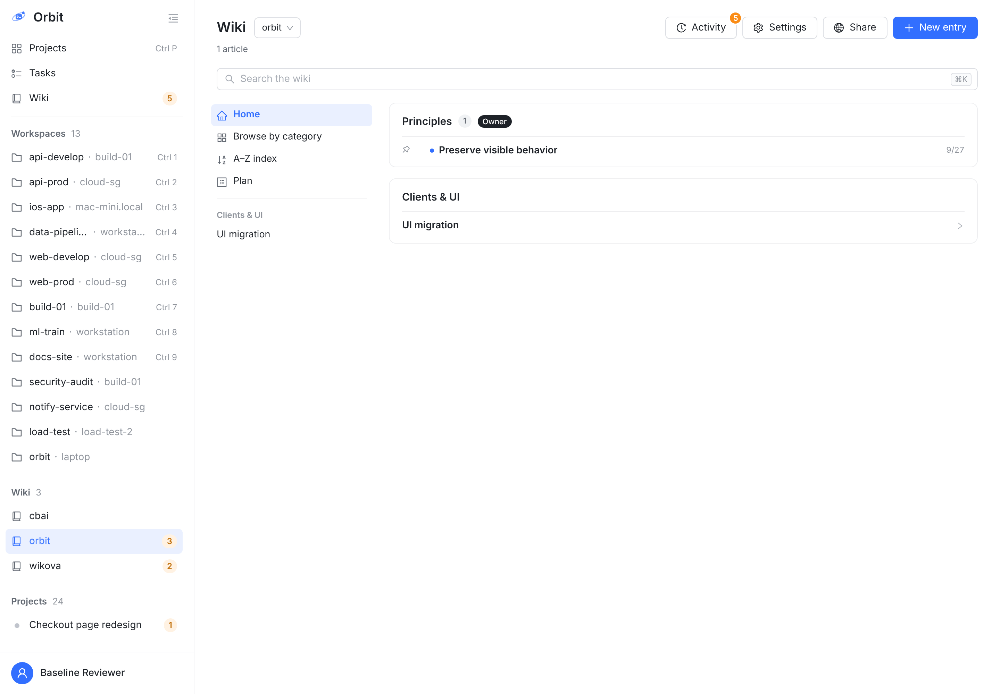
没标尺寸的都是窗口 1440×1000。







绿框是我的建议，也是现在原型的样子。另一个选项是在同一份构建上临时改出来拍的。
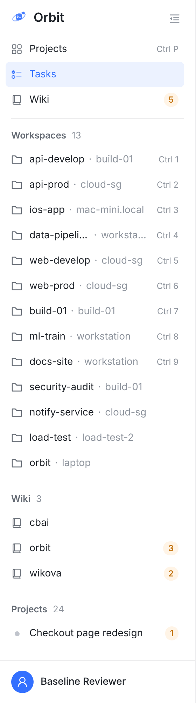
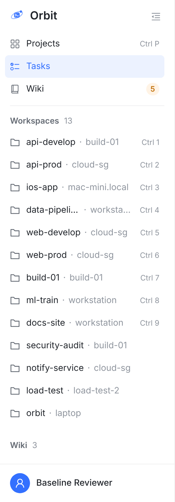
短列表在前，长列表收尾：Wiki 不会被 24 个项目压在下面。
Projects 继续收尾，和 iPhone 抽屉一样。
Projects 被往下推一段（3 个 wiki 约 157 px）。
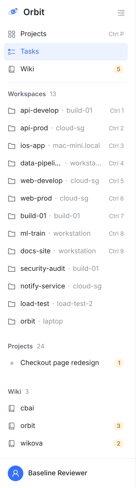
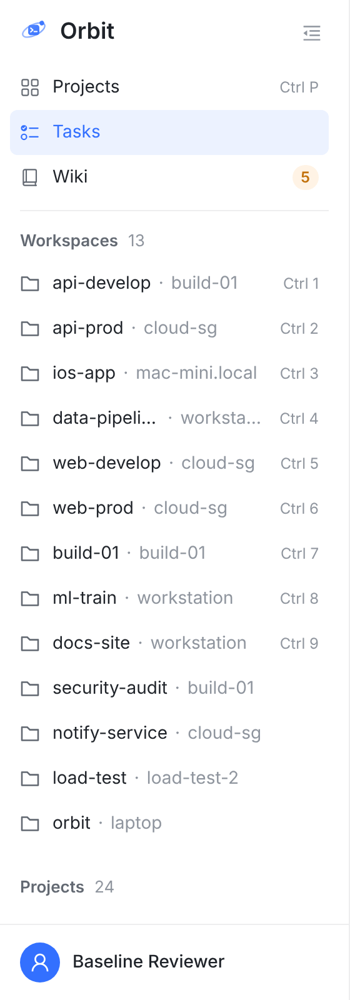
和顶部 Projects、Tasks、Wiki 的先后一致：先工作，后知识。
放不下时排在 24 个项目后面，要滚到底才看得见。
放得下时也更挤：Wiki 固定在底，Projects 只能在中间滚。
Projects 是顶部一行加一个分组，Workspaces 是只有分组。这件事“参考”哪一个，结果不一样。
收起侧栏后还有入口，等你的总数有地方放。
没有 wiki 的账号也进得去（「Create wiki」要从这里进）。
和下面的分组有点重复，Projects 也是这样。
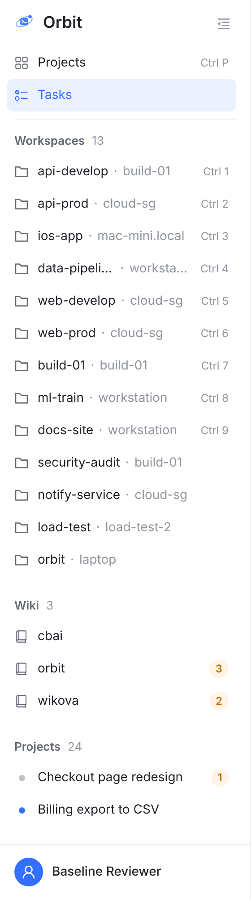
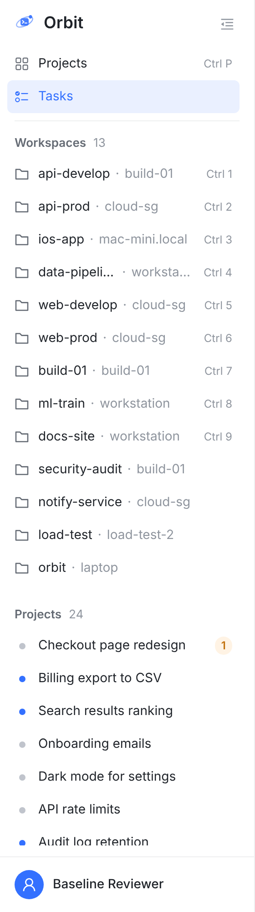
少一行，不重复。
收起后要另外给 wiki 画图标，总数也要换地方。
没有 wiki 的账号要另想入口，分组得在 0 个时也画出来。
这件事碰到你 11-01 定的规则：Workspaces 和 Projects 组头放得下，就只滚 Projects。分组夹在中间后要重新定。下面都是窗口 1440×900。
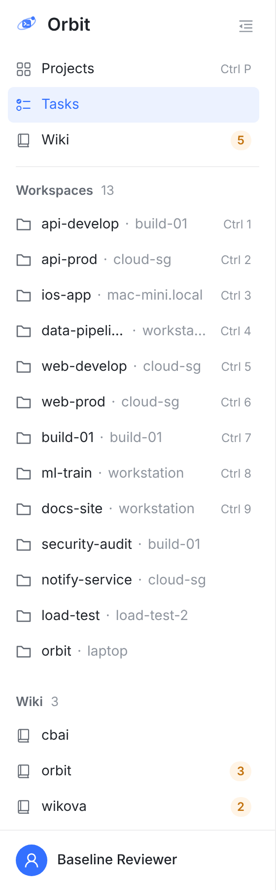
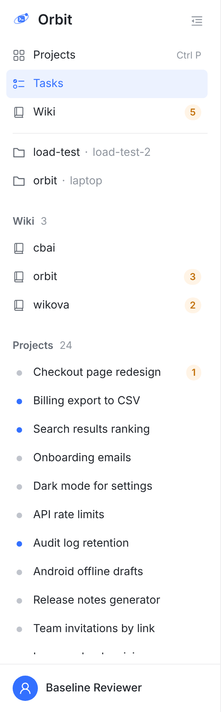
规则的话不用改，只有一个滚动条。
窗口够高时 Wiki 一直看得见。
Workspaces 能固定所需的窗口变高（下表），低于这个高度会跟着滚走。
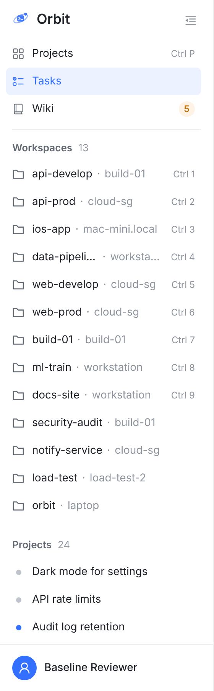
Workspaces 能固定的高度和今天一样，11-01 的规则不受影响。
窗口矮时要在一小块区域里滚 Wiki 和 24 个项目。
窗口够高时 Wiki 也会被滚走；代码上要多一层容器。
| Workspaces 能固定的最低窗口高度 | 今天 | A · 2 个 wiki | A · 3 个 wiki | A · 2 个 wiki，分组折叠 | B |
|---|---|---|---|---|---|
| 你现在的 12 个 Workspace | 763 | 884 | 920 | 812 | 763 |
今天和 A 的数字是在真实浏览器里逐像素量的。B 没有做成真功能，763 是按组头同高推算的。